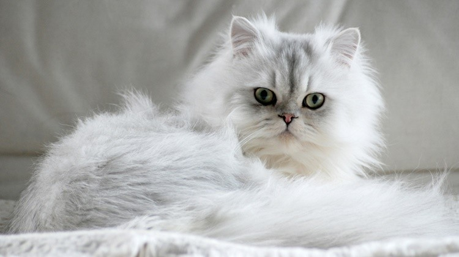
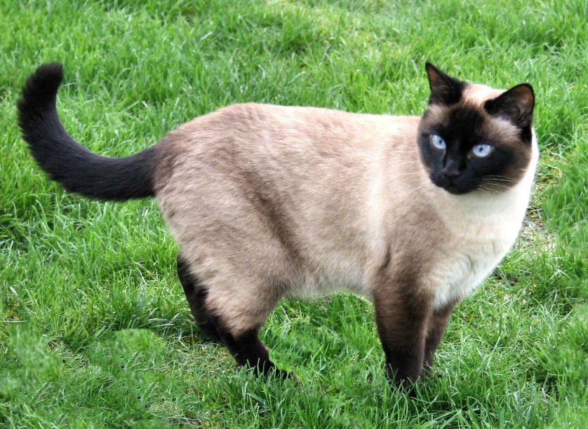
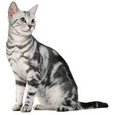

| Perzsa macska |
 |
A pihe puha perzsa macska a legkedveltebb macskafajták egyike. Csodálatra méltó, hogy a Perzsiában Gorbe-ye irāni-ként, azaz „iráni macskaként” emlegetett fajta az egyik legrégebbi macskafajta, méghozzá úgy, hogy a ma ismert perzsa cica még csak nem is keletről származik! Fajtaismertető |
|
Bengáli macska |
 |
A bengáli macska egy igazán különleges macskafajta. A szó szoros értelmében egy igazi “házi tigris macska vagy leopárd macska” hiszen vadmacska vér is csörgedezik az ereiben. A bengálihoz vagy a szavannához hasonló macskafajták tenyészése a legújabb őrület! De mitől lesz egy macska hibrid és mire kell figyelni, ha egy ilyen macskát tartunk házi kedvencként? Fajtaismertetőnkben minden kérdésére megkapja a választ.Fajtaismertető |
| Szíami macska |
 |
A sziámi macska a perzsa macska mellett az egyik legrégebbi és legismertebb macskafajta. A fajta eredete egy széles körben elterjedt mutációra vezethető vissza, ami több, mint 500 éve jelentkezett és Ázsiából, méghozzá Sziámból, a mai Tájföldről indult ki. A sziámi cicák első példányai a XIX. század végén kerültek el a nyugati országokba, főleg királyi udvarokban tartották őket egzotikus státuszszimbólumként. Fajtaismertető |
| Amerikai rövidszőrű |
 |
Amikor az első európai telepesek Amerikába utaztak, hajóik fedélzetén négylábú utasok is tartózkodtak. Akkoriban a macskákat elsősorban vadászképességeik miatt becsülték nagyra. Így a hosszú hajóutakon jó célt szolgáltak, mivel sakkban tartották a patkányokat és egereket. Szárazföldön is nagyon kedvelték őket, hiszen gondoskodtak arról, hogy a telepesek gabonatárolóitól távol maradjanak az élősködők. A mai ismereteink szerint az első észak-amerikai telepesek négylábú kedvencei számítanak a mai sokak által ismert és kedvelt fajta, az amerikai rövidszőrű macska (American Shorthair) ősének. Fajtaismertető |
| Maine Coon |
 |
Manapság már a Maine Coon macska számít a világ egyik legkedveltebb macskafajtájának és egyre nagyobb népszerűségnek örvend Magyarországon is. Ez valószínűleg természetes lényükre, robusztus testalkatukra és pompás jellemükre vezethető vissza. Fajtaismertető |